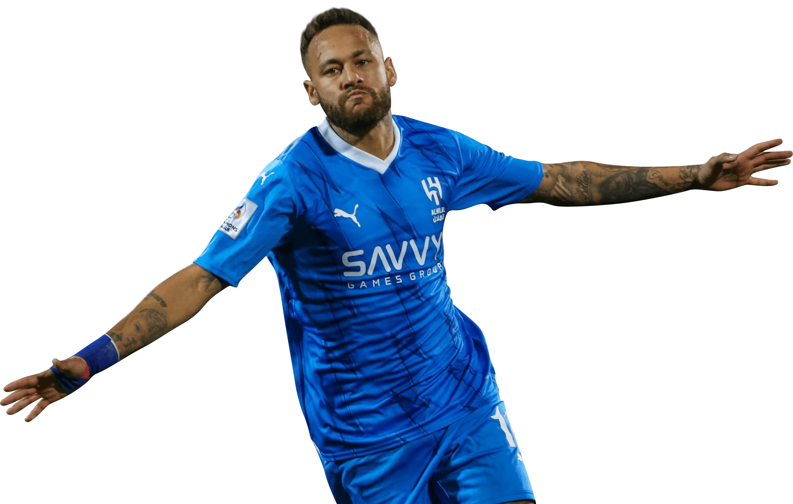

Conheça a fundo os 3 considerados por muitos os melhores da década do futebol mundial!
Neymar Jr
Neymar da Silva Santos Júnior (Mogi das Cruzes, 5 de fevereiro de 1992) é um futebolista brasileiro que atua como atacante. Atualmente joga no Al-Hilal, da Arábia Saudita.
Revelado pelo Santos em 2009, desde cedo correspondeu às expectativas e conquistou diversos títulos com o clube, incluindo dois Campeonatos Paulistas seguidos, uma Copa do Brasil e uma Libertadores, sendo esta a primeira do Peixe desde 1963. Ganhou por duas vezes seguidas o prêmio de melhor jogador sul-americano do ano, em 2011 e 2012, e um prêmio Puskás de gol mais bonito do ano em 2011. Em 2013, após ser protagonista no título da Copa das Confederações pela Seleção Brasileira, Neymar foi vendido ao Barcelona numa transação que é considerada a venda mais cara da história do futebol brasileiro. Na sua segunda temporada pelo clube espanhol, o jogador estrelou um brilhante trio de ataque conhecido como "MSN", ao lado dos também sul-americanos Lionel Messi e Luis Suárez.,

Clubes que passou:
Al Hilal(presente) 5 jogos - 1 gol
Paris Saint-Germain (2017 -2023) 173 jogos - 118 gols
Barcelona (2013 - 2017) 186 jogos - 105 gols
Santos (2009 - 2013) 225 jogos - 136 gols
Brasil (2010 - presente) 129 jogos - 79 gols
Cristiano Ronaldo
Cristiano Ronaldo dos Santos Aveiro OIH • GOIH • ComM (Funchal, 5 de fevereiro de 1985) é um futebolista português que atua como ponta-esquerda ou ponta de lança. Atualmente joga pelo Al-Nassr, da Arábia Saudita, onde venceu a Liga dos Campeões Árabes de 2023. É capitão pela Seleção Portuguesa, onde conquistou a Eurocopa de 2016 e a Liga das Nações em 2018-19. É o maior artilheiro da história do futebol em jogos oficiais com 893 golos,sendo simultaneamente o jogador com mais golos na história a nível de seleções com 128 golos, bem como a nível de clubes com 765 golos. Escalado no Dream Team da Bola de Ouro, também o jogador com o maior número de nomeações do prêmio Ballon d'Or. Durante sua passagem pela Europa, se tornou o maior jogador e recordista da UEFA Champions League[20] e o único atleta a vencer nas três ligas europeias de maior prestígio (Premier League, La Liga e Série A) sendo eleito o melhor jogador e artilheiro das mesmas.
Clubes que passou:
Al-Nassr(2023-presente) 47 jogos - 49 gols (até o momento que ésta matéria foi publicada)
Manchester United (2021 até 2022) 54 jogos - 26 - Ultima passagem
Juventus(2018 até 2022) 134 jogos - 101 gols
Real Madrid (2009 até 2018) 438 jogos - 450 gols
Manchester United(2003 até 2009) 292 jogos - 118 gols - Primeira passagem
Sporting Lisboa(2002/2003) 31 jogos - 5 gols
Portugal: Pela seleção de Portugal, Cristiano fez história. É o maior artilheiro de seleções da história, com 207 jogos - 130 gols marcados.
Lionel Messi
Lionel Andrés Messi Cuccittini (Rosário, 24 de junho de 1987) é um futebolista argentino que atua como atacante. Atualmente joga pelo Inter Miami e pela Seleção Argentina, onde, atuando como capitão, venceu a Copa do Mundo do Catar de 2022. Ele possui um recorde de oito premiações da Bolas de Ouro pela France Football e oito pela FIFA, um recorde de seis Chuteiras de Ouro, em 2020, foi escalado no Dream Team da Bola de Ouro e com 44 títulos conquistados, é o jogador com mais títulos oficiais na história do futebol.
Messi é frequentemente considerado o melhor jogador do mundo e na opinião da grande maioria dos especialistas do esporte, sua qualidade técnica, jogadas, velocidade, habilidade na perna esquerda, trabalho de equipe e extraordinária vocação para o gol, o tornam um dos melhores futebolistas de todos os tempos,[12] com alguns ainda o colocando como o melhor jogador de sempre. Passou quase toda a sua carreira profissional no Barcelona, onde é o maior goleador do clube e recordista de troféus, conquistando 35 troféus, incluindo dez títulos da La Liga (Campeonato Espanhol), quatro títulos da Liga dos Campeões da UEFA e sete Copas do Rei, entre outros
Clubes que passou:
Inter Miami CF (2023 - presente) 12 jogos - 12 gols
Paris Saint-Germain (2021-2023): 65 jogos - 48 gols
FC Barcelona(2004-2021): 778 jogos - 672 gols
Argentina (2004-presente): 190 jogos - 84 gols
Confira os Melhores Momentos de Neymar Jr na carreira!
Onde tudo começou!
A Estréia de Neymar no profissional do Santos.
O primeiro de muitos gols do craque!
Em 15 de março de 2009, com o Pacaembu ocupado por mais de 16 mil pessoas, Neymar de apenas 17 anos marcava seu primeiro gol como profissional, enchendo de otimismo a todos os santistas!
Os Melhores Momentos Do Neymar no Santos!
O "Ney" na época de Santos era embaçado demais!
O famoso Santos X Flamengo, Neymar e Ronaldinho protagonizam jogo histórico!
Com direito a gol Puskás de Neymar, Em 2011 Flamengo e Santos se enfrentaram pela 12ª rodada do Brasileirão em um jogo alucinante que entrou para história. Com direito a show de Ronaldinho Gaúcho e Neymar.
Todos os 136 Gols de Neymar pelo Santos
Neymar tem ao total pelo santos 225 jogos - 136 gols
O primeiro título de Neymar como Jogador Profissional!
Santos vs Santo André – Campeonato Paulista 2010 Final
A tão sonhada Libertadores!
Copa Libertadores - Santos X Peñarol 2011
A Estréia no Barcelona!
A estreia na Europa do maior craque brasileiro na década!
Barcelona campeão da Champions League com gol de Neymar Jr!
"o seu sonho ésta realizado menino!" frase iconica de André Henning que ficou marcada pra sempre no futebol.
Neymar decide e Brasil é campeão das Olimpiadas de 2016!
Com direito a penalti decisivo e golaço de falta, Neymar ajuda o Brasil a ser campeão!
A virada histórica de 6 x 1 contra o Paris!
Neymar só não fez chover nesse jogo!
A chegada de Neymar no Paris-Saint-Germain!
A maior contratação da historia do futebol, negociação que girou em torno de 222 milhões de euros (R$ 800 milhões na cotação da época) e uma das mais polemicas tambem,
seus fãs dizem que foi uma decisão errada de Neymar ao sair de Barcelona que protagonizava ao lado de Lionel Messi!
Primeira temporada de Neymar pelo "PSG"
Temporada 17/18
Confira os Melhores Momentos de Cristiano Ronaldo na carreira!
CR7: A grande conquista da Euro 2016
EURO 2016: Cristiano Ronaldo: o principal jogador de portugal para a conquista do titulo
O Auge dos dribles de Cristinano Ronaldo!
Manchester United - 2007/2008
Sua história com a Champions League!
Primeiro jogador a conquistar por cinco vezes a UEFA Champions League, Ronaldo é também quem fez mais jogos e marcou mais golos na competição, o verdadeiro "Rei" da Champions!
A primeira Champions de 5!
O ano era 2008, O começo de uma era vitoriosa na Champions!
Um dos gols mais marcantes da história!
O gol antologico de Cristiano de bike contra a Juventus em Turim!
Confira os Melhores Momentos de Lionel Messi na carreira!
A grande estréia no Barcelona
O inicio de uma lenda!
O primeiro gol, e que golaço hein?
com direito a passe magestral de Ronaldinho, Messi marca seu primeiro gol no Barcelona
A Primeira Champions de Messi!
o ano era 2009 e messi ganhava sua primeira Champions!
A segunda!
Dois anos depois Messi, em 2011 ganhava sua segunda champions pelo time catalão!
Sua terceira Champions!
Ao lado de Neymar e Luis Suáres, Messi ganha sua terceira Champions!